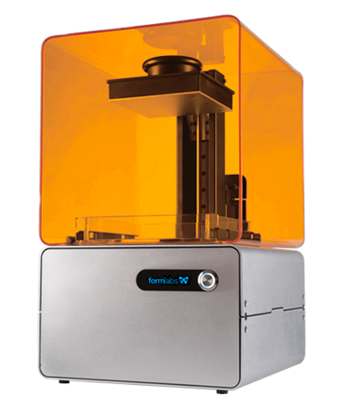

|
|
|
3D Printing Now
The revolution of tecnology is just beginning. This statement sounds ludicrous — it seems smartphones and wearable tech just began infiltrating our lives. But if you look at the history of technology revolutions, it’s clear we are approaching another world-changing innovation:

- Financial-Agricultural, 140 years
- Industrial, 60 years
- Technical, 40 years
- Scientific-Technical, 30 years
- Information, 25 years and counting
Many think that 3D printing is that very innovation. Heading into 2015, 3D printers are dropping in price and increasing in capability. Let’s take a look at some fascinating 3D printed creations that may very well change the world as we know it.
Some 3D printers can literally print 3D printers, some can even print houses

Let's say maybe you have come home from a long day with your frineds and instead of ordering from your usual pizza joint, you fire-up your pizza maker 5000 and print yourself an nice peperoni pizza. This technology is in our near future so we might as well embrace it. 3D Printing is revolutionizing the world one step at a time, and as I said before, smartphones and wristwatches are only the beginning, of our bright future.,
|
|
|
|
|